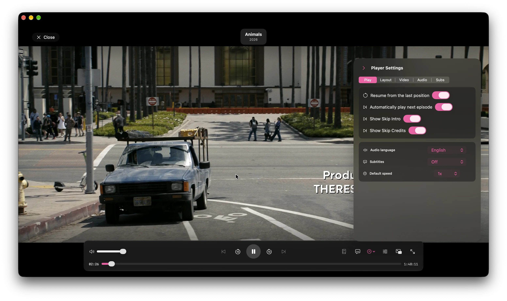

Pick up right
where you paused.
Resume from the last position, automatically play the next episode, and show skip controls for intros and credits.
 frameGet Frame ↗
frameGet Frame ↗Start a movie or episode in Frame, then shape playback around how you watch. Resume where you left off, set a default language, and decide what happens when an episode ends.

Resume from the last position, automatically play the next episode, and show skip controls for intros and credits.
Set audio language and subtitle preferences, then select available tracks from the player while watching.
Adjust video, layout, and playback settings. Use seek and volume controls, full screen, or native picture-in-picture.

Frame’s bundled libmpv and FFmpeg engine handles playback inside the app. There’s no extra player or codec pack to install.
Read about the media engine →Start with a folder, then make the collection yours.
See how the library works ↗